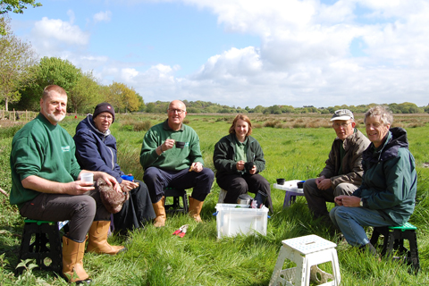

Get involved at Lepe Country Park
Volunteers are important to us at Lepe Country Park
With over a mile of beach, pine fringed cliffs, wildflower meadows, woods and historic D-Day remains, Lepe Country Park is the ideal place to relax and watch the world go by.
A number of different volunteer opportunities are available here:
